Hartree-Fock methods¶
In this section the Hartree-Fock methods will be described.
Restricted Hartree-Fock¶
For the Roothan-Hartee-Fock equations an orthogonal basis is needed, first the first orthogonalization matrix is constructed from the overlap matrix. First by a diagonalization:
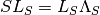
and then the orthogonalization matrix is constructed:
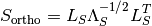
The SCF iterations requires an initial Fock matrix given as:
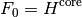
The SCF procedure is calulated as the following equations. First the fock matrix is constructed:
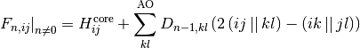
Then the Fock matrix is brought into the orthogonal basis:
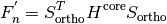
The F’ is then diagonalized:
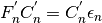
The coefficients are transformed back:
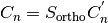
A density matrix can be made from the coefficients:
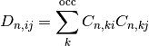
The electronic energy of system can be found as:
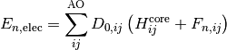
The above SCF procedure will is stopped at certain tresholds. The change in energy and the RMSD of the density matrix can be found as:
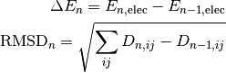
FUNCTION:
- HartreeFock.HartreeFock(input, set, basis, VNN, Te, S, VeN, Vee, results, print_SCF=’Yes’)
- return C, F, D, results
Input:
- input, inputfile object
- set, settingsfile object
- basis, basisset object
- VNN, nuclear-nuclear repulsion
- Te, electronic energy matrix
- S, overlap matrix
- VeN, nuclear-electron attraction matrix
- Vee, ERI matrix
- results, results object
- print_SCF, wether to print SCF to output
Output:
- C, MO coefficients
- F, Fock matrix
- D, density matrix
- results, results obejct with added entries
- results[‘HFenergy’], total Hartree-Fock energy
References:
Unrestricted Hartee-Fock¶
The unrestricted Hartee-Fock method uses the same SCF procedure as as the restricted Hartree-Fock, but with the Fock matrix coupling the alpha and beta spins:
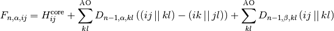
FUNCTION:
- UHF.HartreeFock(input, set, basis, VNN, Te, S, VeN, Vee, results, print_SCF=’Yes’)
- return C, F, D, results
Input:
- input, inputfile object
- set, settingsfile object
- basis, basisset object
- VNN, nuclear-nuclear repulsion
- Te, electronic energy matrix
- S, overlap matrix
- VeN, nuclear-electron attraction matrix
- Vee, ERI matrix
- results, results object
- print_SCF, wether to print SCF to output
Output:
- C, MO coefficients
- F, Fock matrix
- D, density matrix
- results, results obejct with added entries
- results[‘UHFenergy’], total unrestricted Hartree-Fock energy
References:
- Szabo and Ostlund, Modern Quantum Chemistry: Introduction to Advanced Electronic Structure Theory
In unrestricted Hartree-Fock for a closed shell system the spin-symmetry needs to be broken else restricted Hartree-Fock is restored. This is done by the following method, after the first MO coefficients have been made:
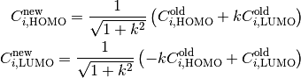